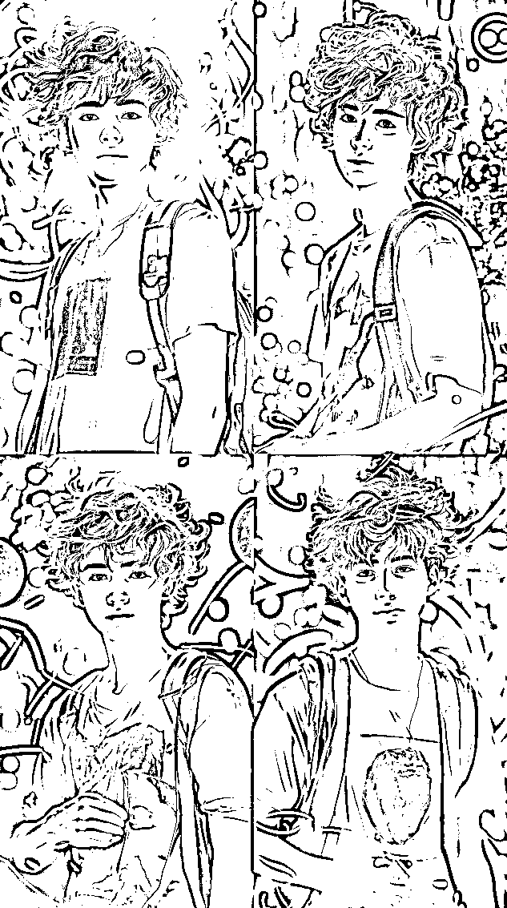

来源：https://ixy2s5ruvqf.feishu.cn/docx/D3fcdPXdHo14mlxUv7UccoFxnbd
大家好，我是云天， 一个网赚自媒体人，有爱的知识分享者。目前主要从事知识分享社群，钻研网络黑科技。
上一篇《思维语录制作保姆级教程》到今天获得了600+的点赞，也很荣幸的被亦仁老大加了精华，这里首先要感谢生财这个大家庭，每天通过生财的风向标和精华帖，帮我打开了很多新的思路。
来生财2年，我发现很多没有项目的兄弟姐妹们是迷茫的，甚至是焦虑的，为什么这么说的，因为他们看到这么多项目，眼花缭乱无从下手。有的项目或门槛高、或操作难度大、或不适合。那么对于这群朋友呢，我觉得最重要的是，不要求你们做到0到1的成绩，而是先从0.1做。这里说的0.1就是你去尝试，去操作，而不是看着这个项目号，适合我，我明天就开始，然后明天又想，下周吧，然后又看到了一个项目，又继续明天、后天、下个月。
云天是做虚拟项目起家的，我也经历过一单9.9，一天2单到一天10单的历程。如今我还记得那年国庆节10月1日第一次开单的时刻，现在回想起那个时候，我会感谢那个时候自己做的每一个0.1，让自己来到了1-100的路程。
那么，我今天分享的这个项目就是能够让没有项目+的圈友们获得收益的一个小项目，哪怕你不去引流，脸皮厚一点，发发朋友圈都可以获得收益。这个项目就是——AI真人卡通头像定制项目。
一单30-100，甚至更高（看人下菜，单头像基本就是30一单，要求高的就贵点）。
我们通过这个教程做出来的头像几乎和本人很像，绝对好评满满，下图即为效果图，可以看出来。真实度很高。
而且目前在抖音上做的还不多，小红书上以图文为主有些在做。另外这种账号变现不考虑粉丝多少，只要发视频，就能吸引来流量。
哪怕你不需要做这个项目，如果自己可以给自己做一张和自己很像的AI头像，发发朋友圈，换成新头像，也是可以装一下逼的。那么废话不多说，直接开讲。
声明：请不要以此项目做任何有辱他人名誉和国法的各类事情
1、账号对标打造
2、MJ平台的基础搭建
3、利用客户的照片制作头像的过程
4、视频或者笔记的制作和发布
5、接单、交付
文章最后给大家奉上我录制的8节完整版教程，更详细。
账号四件套：头像、简介、昵称、头图
头像：专业的人做专业的事，首先我们的头像肯定要做一个ai头像才能符合我们的身份。
简介：简单直接“私人订制头像，欢迎来图定制，定制+xxsss”
昵称：XX私人定制，XX头像定制，XX高端头像定制
头图：找一些好看的或者直接一点的图就可以
（下图仅供参考）
1、首先到某宝购买Midjourney，这里不建议大家自己注册账号并充值，因为自己充值很贵，一个月要几百块。我们到某宝上只需要购买下图这种一个月16-32元的共享账号即可。跑路也不心疼。
2、登录https://discord.com/，通过你购买的共享账号登陆进入社区。（这里需要特殊上网，如果不会，可以百度或者私聊沟通）
3、进入账号之后，点击左下角的加号，创建自己的服务器。

4、我们这个时候就进入了自己的服务器，然后点击左下角的导航图标，进去之后，选择Midjourney社区

5、当你第一次进去的时候，右边是不显示列表的，这个时候我们点击右上角的人物图像，这个时候右边就会有列表，我们点击Midjourney，添加Midjourney机器人，安装到我们的服务器。

6.再将如下链接复制到对话框内，按回车（https://discord.com/oauth2/authorize?client_id=1090660574196674713&permissions=274877945856&scope=bot）。再用鼠标点击这个链接。按照提示安装InsightFace机器人到你的服务器。
7.点击前往你的服务器，这样我们前期的准备工作就完成了。
在这里我们将用到Midjourney (以下简称MJ)，因为MJ电脑要求配置低，内容丰富，适用于各类环境。这里只针对咱们需要用到的指令进行操作。
因为我们是做头像的，只需要客户提供半身正面照片即可，尽可能的背景干净，不干净问题也不大。
这里我就拿我的头像（偶像）照片举例。
1.点击+号，选中上传文件，找到我们要上传的图片上传
2.图片上传后，左键点击图片，放大图片，右键点击图片，复制图片链接
3.在空白处输入“/”，选择imagine，在右边空白粘贴你的图片链接，记得把png或者jpg格式后面问号到最后的都删除（如下图标记），然后再按空格，再输入如下描述语。按回车，等生成一组类似的图片
描述语参考：
男性可以用这个描述语言。
A handsome young man,keep the consistency of action, expression, clothing, shape and appearance of the photos, 3d character from Disney Pixar,super detail,blender soft lighting, ip, blind box, cinematic edge lighting,romanticedge lighting,romantic scenes --ar 9：16
女性可以用这个描述语言。
A cute young woman,keep the consistency of action, expression, clothing, shape and appearance of the photos, 3d character from Disney Pixar,super detail,blender soft lighting, ip, blind box, cinematic edge lighting,romanticedge lighting,romantic scenes --ar 9：16
上方结尾 --ar 9：16 意思就是生成9:16的竖图，你也可以改成 --ar 1:1 的方图
4.这样就MJ给我们生成了四张写实逼真的原创图片，这里我们如果满意就选择一张图片生成大图，如果不满意，就刷新键重新生成。
在这里给大家解释一下U1-U4和V1-V4的意思
U1-U4：如果你看中了第一排第二张图片，你点击U2，机器人会重新给你发送一张这张图的大图版本。
V1-V4：如果你觉得第一排第二张图片不错，那么你点击V2，机器人会根据这张图的风格再给你生成四张图片
右边的刷新按钮：对着四幅图都不满意，点击刷新，会根据这个描述重新生成图片。
5.这里我又点击刷新生成了新的四幅图。决定用第四章图片生成我想要的结果。
我按V4，进行根据这副的整体架构，再生成四张图片。或者直接按U4，生成第四张图片的高清大图。
6.现在以上图大图为例继续操作，现在这样会已经很精致了名单时和原图是不像的，我们要继续操作，让图片变成和我们真人图很像的程度。
我们在空白处输入：/saveid，按图示，输入和导入图片。按回车
7.收到如下图提示后，右键点击上面生成的大图，选择APP——INSwapper
8.这样我们就生活称号了一张和真实图片非常接近的一张定制头像了。如下图对比即可。
9.大功告成，这个时候抓紧拉着你的亲戚朋友，老公老婆过来看看你的美美的靓照吧。
意思是，对方提要求，我们来制作。
例如对方要求如下：一个酷酷的年轻男人，眼睛有神，瓜子脸，彩色风格，格斗场的背景，奔跑中，3D渲染
1、我们可以打开这个网站：
OPS 提示词工作室 | 可视化编辑提示词https://moonvy.com/apps/ops/

2、按照客户的要求在左侧输入描述语，右侧可以选择适合的词组。
3、然后将生成的英文描述语复制到MJ。如下图操作。注意这里没有垫图（上传图片），我们这里根据客户的需要让MJ给我们生成了一副图片。
4、知道生成一幅合格的图片
5.我们以第3张图为例，在点V3，生成四张和第三张图风格类似的图片。

6.再以第二张图生成最终大图，按U2

7.我们再用saveid指令，把脸部换成我们客户的脸部。


一般笔记图文的发布很简单，就是以原图和效果图合成一张图片，展现在各大平台，这样客户看到也知道你这里是可以定制的。
具体操作：
手机下载美图app，点击模板，里面有很多模板可以使用，我这里选择朋友圈背景为例
再发布的时候，话题务必加上“#男生女生头像 #ai绘画 #优质头像”等一些标记。
每一个脚本配音都是这个文案，然后后面的图不一样，批量无脑出实拍视频即可。这种效果非常好，点赞都很高。
1、接单微信准备，一样做好微信头像、朋友圈的包装
2、当天接单，第二天交付，千万不要半小时就做好了给客户。否则客户心里会有落差。
3、设定好自己的一份话术表，应对客户的各种需求。减少打字带来的时间成本
4、关于售后，我们要提前告知客户，如果不满意，我们可以提供两次免费修改的机会。不能无休止的售后，这样我们的时间成本就会增大。
最后，依照惯例，我有录制了一整套的更详细的视频教程，如果还有疑惑的圈友们，可以下载观看。
如果你对我拆解的AI真人卡通头像项目比较感兴趣，可以去实际操作下这个项目。
不管是自己给自己做个头像，还是去接单，都是很不错的一个选择。
尤其适合手头上没有项目的小伙伴，抓紧实操。
如果你有问题在找我交流哈！